Assessment: Integumentary, HEENT & Neuro
How to start an exam, read the skin, work through the head and neck, and test the cranial nerves and mental status.
Starting the exam
The physical assessment collects baseline data for the plan of care and catches changes in the client's condition. It can be complete (head to toe) or focal (one problem or system).
| Technique | What it is | Order |
|---|---|---|
| Inspection | Looking (and smelling, listening) | Always first |
| Palpation | Touching for temperature, texture, masses, tenderness | Usually second |
| Percussion | Tapping to hear the density of what's underneath | Usually third |
| Auscultation | Listening with a stethoscope | Usually last, except the abdomen |
Before you touch anyone
On entering the room, first check for acute distress (skin color, breathing effort, alertness). If the client is in distress, do a focused assessment instead.
General survey
- Alertness and orientation
- Skin color, breathing effort, distress
- Height, weight, BMI, posture
- Facial expression, mood and affect
- Hygiene, grooming, dress, odors
- Mobility aids and equipment in use
- Vital signs
BMI
- Under 18.5 = underweight
- 25 or greater = overweight
- 30 or greater = obese
- No calculator: weight (lb) × 703 ÷ height (in)²
Consider culture: eye contact and facial expression vary between cultures. Get an interpreter for language barriers.
Stethoscope
| Side | Hears | Pressure |
|---|---|---|
| Diaphragm | High-pitched: S1, S2, lung and bowel sounds | Firm, with index and middle fingers |
| Bell | Low-pitched: murmurs, bruits, S3, S4 | Light, with the whole rim touching skin |
Earpieces angle toward your nose. Thick tubing no longer than 45 cm (18 in) carries sound best. Always listen on bare skin.
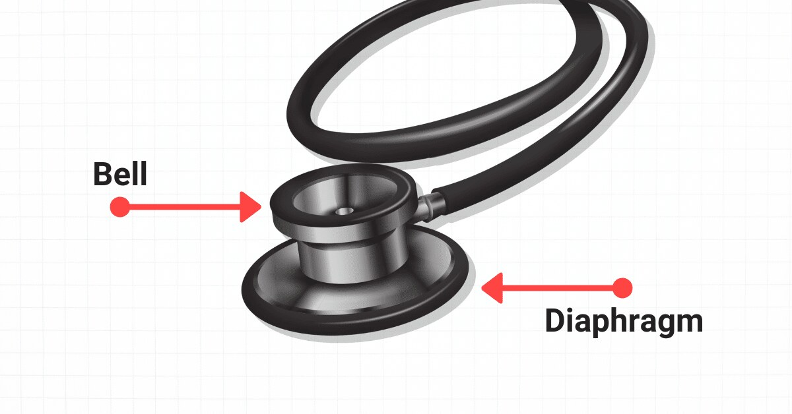
Skin
Inspect and palpate at the same time, head to toe, comparing sides. Natural light is best (especially for dark skin). Keep the room comfortable: cold causes bluish lips and nail beds, heat a reddish undertone. Tattoos can hide rashes and color changes, so palpate them too.
Normal skin documentation: "Skin is clean, dry, and intact without wounds or lesions."
| Color | Looks like | Means | Dark skin: where to look |
|---|---|---|---|
| Cyanosis | Blue | Hypoxia or impaired venous return: the priority | Gray; palms, soles, lips, nail beds, oral mucosa |
| Jaundice | Yellow-orange | Liver dysfunction or RBC destruction (↑ bilirubin) | Sclera, hard palate, oral mucosa |
| Erythema | Red | Inflammation, rash, fever, sun, bleeding or bruising | Palpate for warmth, firmness, tenderness |
| Pallor | Loss of color | Anemia, shock, decreased blood flow | Gray (dark skin), yellow-brown (brown skin) |
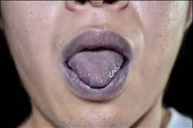
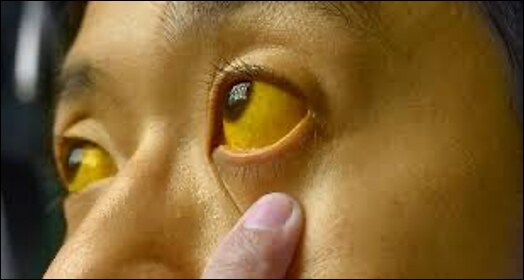
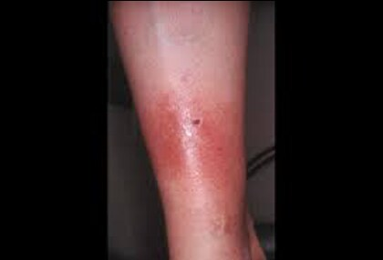
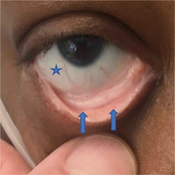
Decreased pigment in one area can be vitiligo or skin cancer. Bruises or injuries can point to abuse or neglect.
Temperature
- Back of the hand only; compare sides
- Cool or cold = decreased blood flow
- Warm or hot = inflammation or infection
Texture & moisture
- Use your fingertips
- Expect smooth, soft, even; thicker on palms and soles
- Moist in the axillae and skin folds only
- Look for diaphoresis (sweating), oiliness, dry flaking
- Older adults: thinner, drier skin
Turgor: pinch a skin fold over the clavicle, sternum, or back of the hand. It should return within a few seconds. Tenting (stays up) = dehydration. Not reliable in older adults.
Edema
Excess fluid in the tissues, most often the lower legs. Skin looks shiny and tight, and your fingerprint leaves a dent. Press at least 5 seconds over a bony spot (behind the medial malleolus, top of the foot, shin), measure the circumference, and note how far up the leg it goes.
Always compare with the other limb.
- Bilateral = fluid volume excess or venous insufficiency
- Unilateral = inflammation, DVT, lymphedema (measure it, check for redness and tenderness)
Edema grading
- 1+ = trace, 2 mm, rapid response
- 2+ = mild, 4 mm, 10–15 sec
- 3+ = moderate, 6 mm, prolonged
- 4+ = severe, 8 mm, prolonged
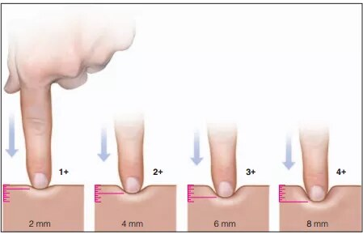
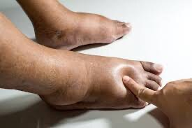
Lesions & wounds
Describe every lesion: measure length × width × depth in cm, then note distribution, shape, color, texture, location, exudate, odor, and tenderness.
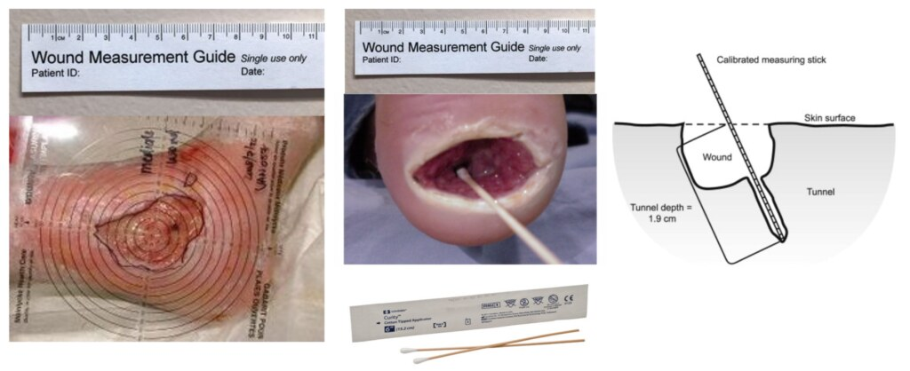
Primary (from healthy skin)
- Macule: flat color change, <1 cm (freckle, petechiae)
- Papule: raised, solid, <1 cm (raised mole)
- Nodule: firm, deep, 1–2 cm (wart)
- Vesicle: serous fluid, <1 cm (blister, herpes simplex, chickenpox)
- Pustule: pus (acne)
- Tumor: solid mass >1–2 cm
- Wheal: edematous, irregular (insect bite)
- Atrophy: thin, shiny, translucent (arterial insufficiency)
Secondary (change in a primary)
- Erosion: lost epidermis, moist (ruptured vesicle)
- Crust: dried blood, serum, or pus (scab)
- Scale: flaking (dandruff, psoriasis, eczema)
- Fissure: linear crack (tinea pedis)
- Ulcer: epidermis and dermis lost (pressure injury, venous stasis ulcer)
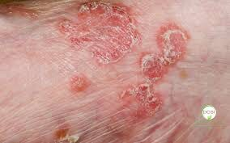
ABCDE for skin cancer: Asymmetry, Border irregularity, Color variation, Diameter >6 mm, Evolving. Melanoma in clients of African descent shows up more under the nails and on the palms and soles.
Common lesions: adults get contact dermatitis, tinea pedis, psoriasis, and cold sores. Older adults get liver spots (lentigines), seborrheic keratosis, skin tags, and sebaceous hyperplasia.
Pressure: check bony prominences (elbows, coccyx, hips, heels) on clients in bed and the lower buttocks on clients in wheelchairs. Press any red area. Nonblanchable redness means pressure damage. The Braden scale scores pressure injury risk.
Nails & hair
Expect symmetric nail beds, uniform color, a firm base, and a nail angle of about 160°.
| Finding | Means |
|---|---|
| Clubbing (angle >160°) | Chronic low oxygen from heart or lung disease |
| Thick, yellow, ragged edges | Fungal infection |
| Discoloration | Abnormal |
The ATI skills module puts the clubbing angle at over 180°. This guide uses over 160°, which matches the chapter and the slides.
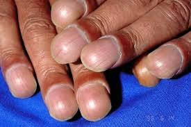
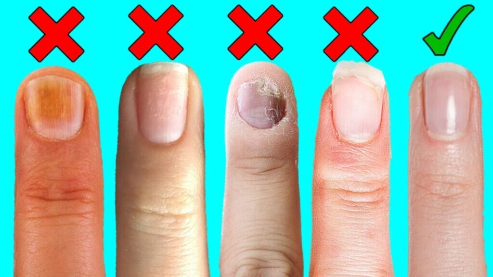
Hair: expect even distribution and symmetric growth or loss. Postmenopausal clients may thin. Check for dry patches and lice. Ask clients to remove a wig or head covering.
Alopecia
- Hair loss
- Endocrine disorders, poor nutrition
Hirsutism
- Hair on the face, shoulders, or chest in females
- Endocrine disorders, aging
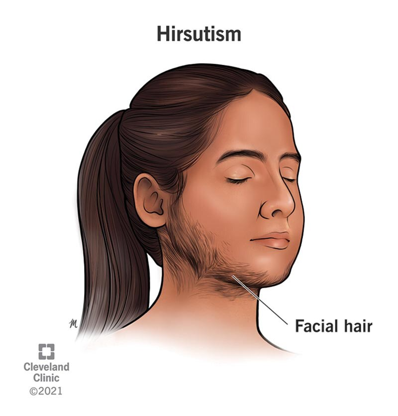
Skin aging: thin, dry, fragile, wrinkled, less elastic; thick, slow nails; thinning hair; less oil and sweat; slow healing; less padding over bones.
Head & neck
The skull, face, and expressions should be symmetric with no bony deformities, masses, or tenderness. Movements should be voluntary. The top of the ears sits level with the eyes. Neck muscles and shoulders are equal, and the neck moves smoothly: chin to chest, ear to shoulder, chin up.
Lymph nodes
Use the pads of the index and middle fingers in small circles and compare sides. Nodes usually aren't palpable, tender, or visible. Infection makes them enlarged, firm, and tender.
| Node | Location |
|---|---|
| Occipital | Base of the skull |
| Postauricular | Over the mastoid |
| Preauricular | In front of the ear |
| Tonsillar | Angle of the mandible |
| Submandibular | Along the base of the mandible |
| Submental | Midline under the chin |
| Anterior cervical | Along the sternocleidomastoid |
| Posterior cervical | Behind the sternocleidomastoid |
| Supraclavicular | Above the clavicles |
For an enlarged node, note location, tenderness, size, shape, consistency, mobility, and warmth.
Thyroid: two lobes in front of the trachea in the lower neck. A normal one isn't visible. Have the client sip water and feel it rise with the trachea. If it's enlarged, listen with the bell: a bruit means increased blood flow (possible hyperthyroidism).
Trachea: midline. Masses or lung problems push it to one side.
Eyes
Exam order
| Test | How | Expected |
|---|---|---|
| Snellen (CN II) | 20 ft away; uncorrected first, then with glasses; each eye, then both | 20/20. 20/30 = sees at 20 ft what a normal eye sees at 30 ft |
| Rosenbaum | Held 14 in from the face | Screens near vision (presbyopia) |
| Ishihara | Shaded shapes | Color vision |
| Corneal light reflex | Shine a light at both eyes | Reflection symmetric |
| Cover/uncover | Cover one eye, then uncover | Both eyes gaze the same way (no strabismus) |
| Visual fields | Face client 2 ft away, each cover the opposite eye, bring fingers in from 4 directions | Client sees them when you do |
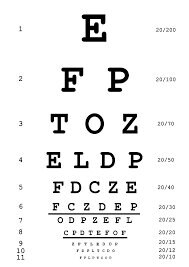
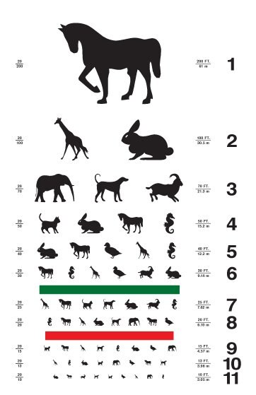
Six cardinal positions of gaze (CN III, IV, VI): the client follows your finger through a wide "H" without moving their head. Expect full, smooth movement. A couple of beats of nystagmus (jerky movement) in far lateral gaze is fine; more is abnormal.
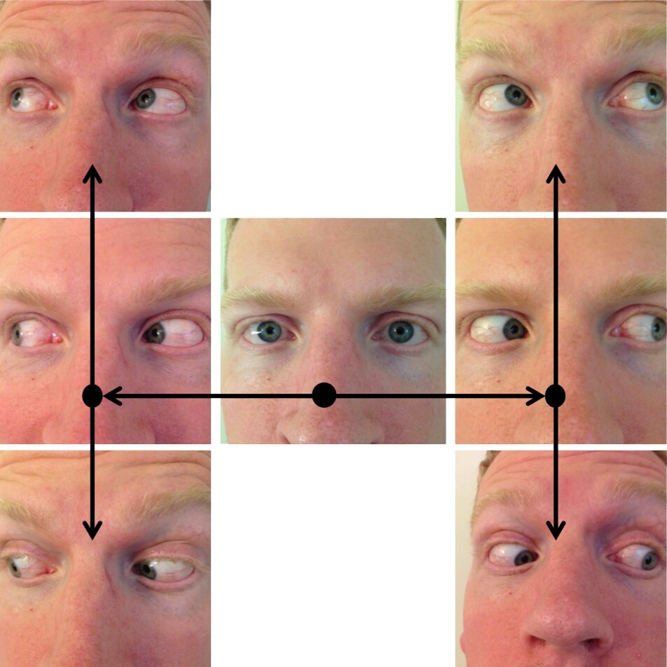
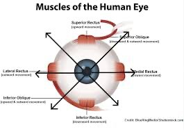
PERRLA: Pupils Equal (3–7 mm), Round, Reactive to Light (direct and consensual), Accommodation (dilate far, constrict near).
Expected external eye
- Eyes parallel, brows symmetric
- Lids close fully; upper lid covers 1–2 mm of the iris
- Lashes curve outward
- Palpebral conjunctiva pink, bulbar transparent
- Sclera white (light yellow with brown spots in dark skin)
- Cornea and lens clear
Unexpected
- Exophthalmos (bulging), strabismus (crossed)
- Ptosis (upper lid covers the pupil)
- Asymmetric light reflex, loss of visual fields
- Periorbital edema, drainage
- Cloudy lens (cataracts); partly lit iris (glaucoma)
Ophthalmoscope: darken the room, start at 0 diopter, your right eye for their right eye. Expect a red reflex in both eyes, a light pink-yellow optic disc, and an artery-to-vein ratio of 2:3 with no nicking.
Eye aging: presbyopia, glare intolerance, trouble telling colors apart, slower pupils, yellow lens, cataracts, and arcus senilis (gray-white ring around the cornea).
Ears
External: small amount of cerumen is normal; skin matches the face; no lesions, tenderness, or smelly discharge. Pulling the pinna or tragus hurts with otitis externa (swimmer's ear).
Otoscope (adult): pull the auricle up and back, insert the speculum slightly down and forward 1–1.5 cm, and don't touch the canal. The tympanic membrane is pearly gray, intact, with a cone of light (5 o'clock right ear, 7 o'clock left). Red and bulging with no light reflex = middle ear infection.
| Test | How | Expected |
|---|---|---|
| Whisper (CN VIII) | Client covers one ear; whisper from 1–2 ft behind | Repeats the words |
| Rinne | Tuning fork on the mastoid, then beside the ear canal | Air conduction lasts twice as long as bone (AC > BC, 2:1) |
| Weber | Tuning fork on top of the head | Heard equally in both ears |
The whisper test is the main hearing screen.
If Weber lateralizes: conductive loss is heard best in the bad ear; sensorineural loss is heard best in the good ear.
Before you document hearing loss in an older adult, look in the canal. Cerumen buildup is a common cause.
Nose, mouth & throat
Expected nose
- Midline, septum not deviated
- Nares patent (sniff with one side blocked)
- Mucosa light red and moist
- Sinuses (frontal, maxillary) nontender
Unexpected nose
- Pallor
- Inflammation
- Discharge (note clear, purulent, or bloody)
- Flaring nares = breathing difficulty
| Part | Expected |
|---|---|
| Lips | Darker than face, moist, symmetric; pink to plum |
| Gums | Tight to teeth, pink, no bleeding (remove dentures to check) |
| Mucosa | Pink, moist; freckling in dark skin. Best place to spot pallor, cyanosis, jaundice in dark skin |
| Tongue | Pink with papillae, midline; hold the tip with gauze |
| Teeth | Shiny, white, intact; yellowing common with age |
| Palate & uvula | Soft palate and midline uvula rise when the client says "ahh" |
Abnormal: pallor, jaundice, cyanosis, missing teeth, caries, abnormal speech, dry cracked lips, lesions.
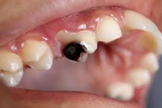
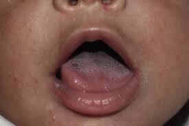
- +1 = barely visible
- +2 = halfway to the uvula
- +3 = touching the uvula
- +4 = touching each other
Equipment: otoscope, watch, tuning fork, nasal speculum, tongue blade, penlight, gauze square, cotton-tipped applicators.
Aging: hearing loss (presbycusis = high-frequency loss), thicker eardrums, less taste and smell, tooth loss, pale gums, less saliva, voice pitch rises.
Cranial nerves
Know all 12: name, sensory/motor/both, and how to test each one.
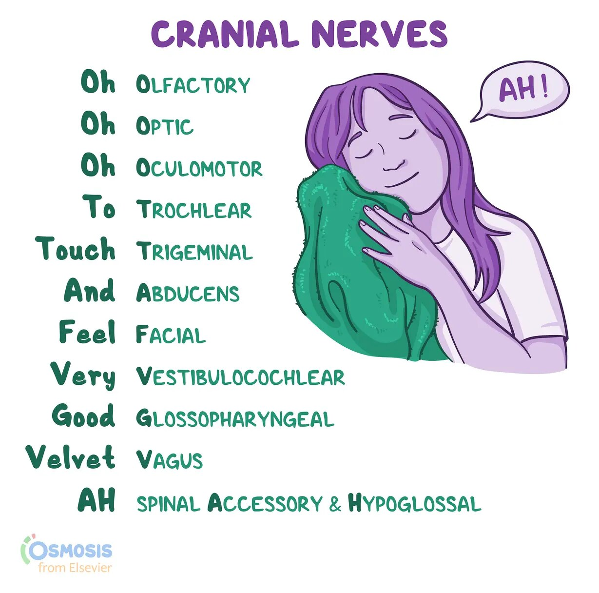
"Oh Oh Oh To Touch And Feel Very Good Velvet, AH": Olfactory, Optic, Oculomotor, Trochlear, Trigeminal, Abducens, Facial, Vestibulocochlear (auditory), Glossopharyngeal, Vagus, Accessory, Hypoglossal.
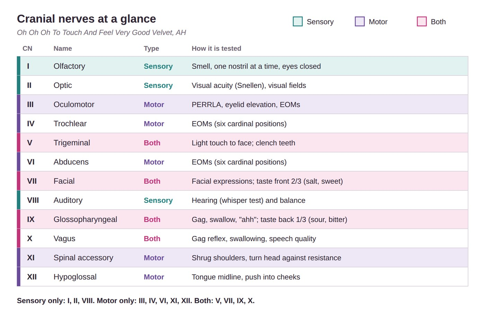
| CN | Type | Test |
|---|---|---|
| I Olfactory | Sensory | Eyes closed, one nostril blocked, identify a familiar scent (mint, coffee, toothpaste); repeat other side |
| II Optic | Sensory | Snellen and visual fields |
| III Oculomotor | Motor | PERRLA, eyelid elevation, eye movement |
| IV Trochlear | Motor | Six cardinal positions |
| V Trigeminal | Both | Sensory: cotton on forehead, cheeks, chin with eyes closed. Motor: clench teeth while you feel the jaw muscles |
| VI Abducens | Motor | Six cardinal positions |
| VII Facial | Both | Motor: smile, frown, puff cheeks, raise brows, close eyes tight. Sensory: salt and sweet on the front of the tongue |
| VIII Auditory | Sensory | Whisper test (hearing and balance) |
| IX Glossopharyngeal | Both | Gag reflex, "ahh," swallowing; sour and bitter on the back of the tongue |
| X Vagus | Both | Gag reflex, swallowing, speech quality, soft palate rises |
| XI Spinal accessory | Motor | Shrug shoulders and turn head against resistance |
| XII Hypoglossal | Motor | Tongue midline; push it into each cheek; say "light, tight, dynamite" |
Sensory only: I, II, VIII (smell, see, hear). Both: V, VII, IX, X. Everything else is motor only.
Swallowing is CN IX and X. Taste is CN VII (front two-thirds) and CN IX (back third).
Use an alcohol wipe to test smell. Noxious odors stimulate CN V and give a false response.
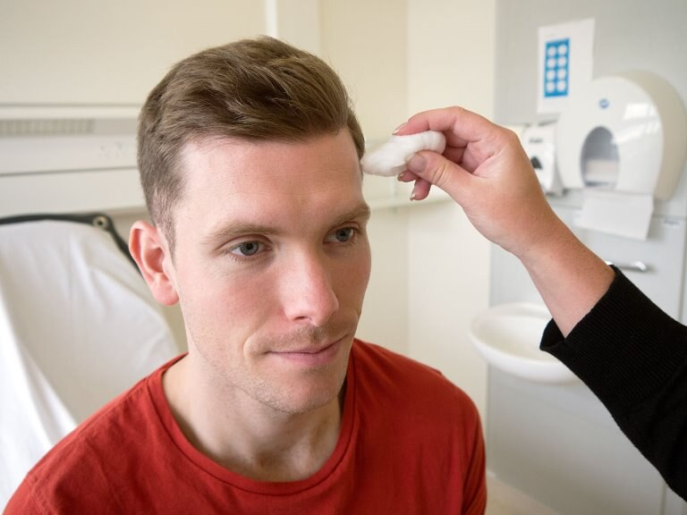
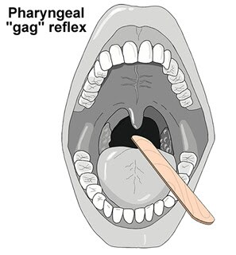
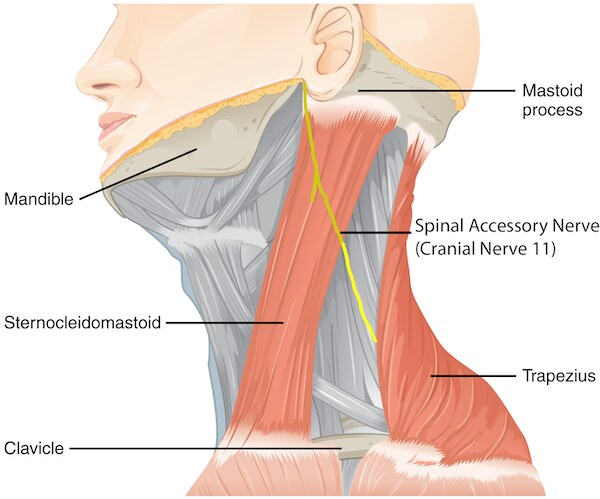
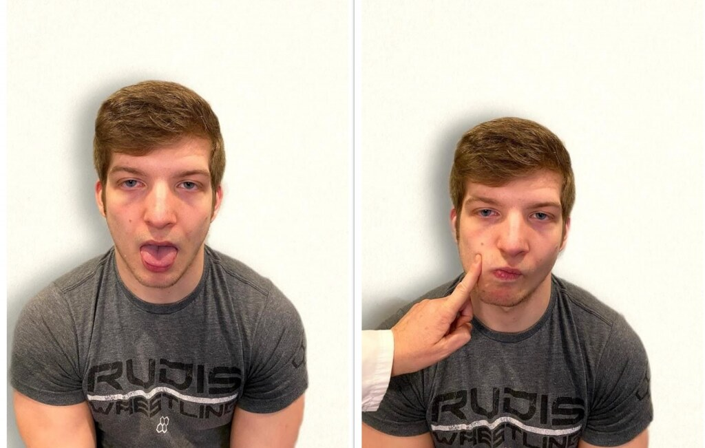
Test the gag reflex mainly when a client can't open their mouth and say "ahh" (such as an unconscious client) to check airway protection. Explain it first.
Mental status & neuro exam
| Level of consciousness | What you see |
|---|---|
| Alert | Eyes open, answers spontaneously and appropriately |
| Lethargic | Opens eyes and answers, but drowsy and drifts back to sleep |
| Obtunded | Responds to light shaking; confused and slow |
| Stuporous | Needs painful stimuli for a brief response; may not speak |
| Comatose | No response to repeated painful stimuli |
If a client isn't alert, check their response to voice, then touch, then pain (press a pen across a nail bed). AVPU = Alert, Voice, Pain, Unresponsive.
Decorticate
- Flexion and internal rotation of arms and legs
Decerebrate
- Neck and elbows extended, wrists and fingers flexed
Orientation (A&O × 4): person (name), place, time, situation. Hospitalized clients often lose track of the day, so don't jump to disorientation.
Glasgow Coma Scale
Scores eye opening, verbal response, and motor response. Minimum 3, maximum 15. A higher score is better; 15 means fully conscious. Use it for a baseline and to track changes.
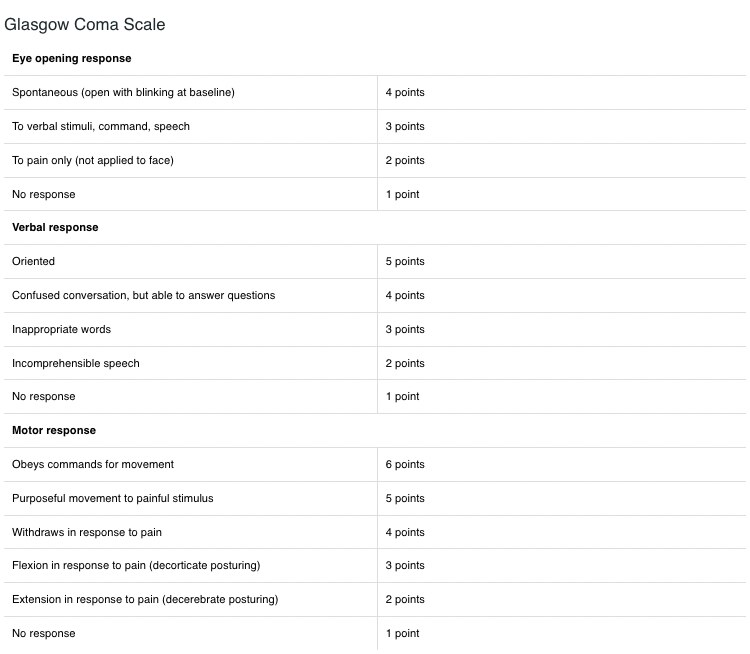
| Testing | How |
|---|---|
| Immediate and recent memory | Repeat three words now, then again about 10 min later |
| Remote memory | Birth date or mother's maiden name |
| Calculation | Count backward from 100 by 7s |
| Abstract thinking | Explain a cliché ("A bird in the hand…") |
| Judgment | "What would you do if you locked your keys in the car?" |
| Thought process | Watch for flight of ideas or nonsense words |
| Thought content | Delusions, hallucinations |
The Mini-Mental State Exam objectively scores orientation, attention and calculation, recall, language, and reading.
Coordination
- Finger-to-nose (then eyes closed)
- Rapid alternating movements (pat thighs palm up, palm down)
- Heel-to-shin
- All should be smooth and accurate
Sensory (eyes closed, all four limbs)
- Pain: sharp vs dull ends of a broken tongue blade, random spots
- Temperature: warm and cold test tubes
- Light touch: cotton ball, proximal to distal
- Vibration: tuning fork handle
- Position: move a finger or toe up or down
Discrimination: two-point (open paper clips), stereognosis (identify a key in the hand), graphesthesia (identify a number traced on the palm). A 10-g monofilament checks the soles of clients with diabetes or neuropathy.
Deep tendon reflexes
| Reflex | Where to strike | Expected |
|---|---|---|
| Biceps | Your thumb on the tendon in the antecubital fossa | Elbow flexion |
| Brachioradialis | 2.5–5 cm above the wrist | Forearm pronation, elbow flexion |
| Triceps | Just above the elbow, arm hanging at 90° | Elbow extension |
| Patellar | Just below the kneecap | Lower leg extension |
| Achilles | Above the heel, foot dorsiflexed | Plantar flexion |
Grading: 0 none, 1+ diminished, 2+ expected, 3+ brisker than average, 4+ hyperactive with clonus.
The ATI skills module describes the brachioradialis response as forearm flexion and hand supination. This guide uses the chapter's pronation and elbow flexion.
Babinski: trace an upside-down "J" up the sole. Adults: no response or toes curl. Fanning toes with the big toe going up is abnormal (upper motor neuron disease).
Neuro aging: slower reflexes, weaker short-term memory, less vibration and position sense, decreased senses, poorer balance.
Quick check
Which skin color finding is the priority?
Cyanosis. It signals hypoxia.
Edema is 6 mm deep and slow to rebound. Grade?
3+.
Which cranial nerves are sensory only?
I, II, and VIII.
Weber test: sound is loudest in the ear with hearing loss. What type of loss?
Conductive.
A client's GCS drops from 14 to 9. Better or worse?
Worse. Lower scores mean decreasing consciousness.
Assessment: Thorax, Cardiovascular, Abdomen & Musculoskeletal
The chest, heart and pulses, abdomen, and bones and muscles: where to listen, what you should hear, and what's abnormal.
Breasts
Breast self-exam: monthly, 4–7 days after the period starts (or right after it ends). Pregnant or postmenopausal clients pick the same day every month. Implants sit behind the tissue, so the exam is the same.
Inspect (women: 4 positions)
- Arms at sides
- Arms overhead
- Hands pressed on hips
- Leaning forward
- Men: sitting or lying, arms at sides
Palpate
- Get permission first
- Lying down, arm overhead, small pillow under that shoulder
- Pads of three middle fingers
- Sternum to posterior axillary line, clavicle to bra line, plus the tail of Spence
- Circular, wedge, or vertical strip pattern
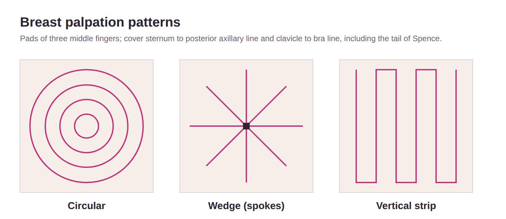
| Expected | Report (possible cancer) |
|---|---|
| One breast slightly larger | Peau d'orange (orange-peel dimpling from edema) |
| Round or oval areolas, darker than the skin | Recent nipple inversion |
| Everted nipples | Dimpling or retraction |
| Symmetric veins | One-sided dilated veins, rash, edema |
| Change in size or contour |
Document a nodule's location (quadrant or clock), size in cm, shape, consistency, borders, tenderness, redness, dimpling, nearby lymph nodes, and mobility. Fibrocystic disease = tender cysts that worsen with periods. Gynecomastia = male breast enlargement (teens, older adults). With age, breasts get softer, flatter, and more pendulous, and nipples may invert.
Thorax & lungs
Use all four techniques. Assess the posterior chest sitting or standing, the anterior chest sitting, lying, or standing. Right lung: 3 lobes (listen to the middle lobe at the axilla). Left lung: 2 lobes.
Landmarks: midsternal, midclavicular, anterior axillary, midaxillary, posterior axillary, scapular, and vertebral lines. Percuss and auscultate over the intercostal spaces, side to side.
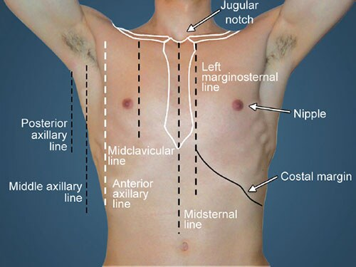
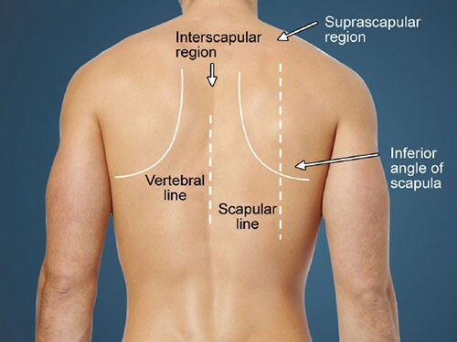
| Line | Runs through |
|---|---|
| Midsternal | Center of the sternum |
| Midclavicular | Midpoint of each clavicle |
| Anterior axillary | Front fold of the axilla |
| Midaxillary | Apex of the axilla |
| Posterior axillary | Back fold of the axilla |
| Scapular | Inferior angle of each scapula |
| Vertebral | Center of the spine |
Inspection
- RR 12–20, regular; don't tell the client you're counting
- Effortless, quiet, symmetric
- No accessory muscles or retractions
- AP diameter half (or a third) of the side-to-side width
- No rib, sternum, scapula, or spine deformities
- Trachea midline; SpO2 95% or higher
Work of breathing is up if
- Neck or intercostal muscles help
- Skin pulls in between the ribs
- Client sits up or leans forward (orthopneic)
- Barrel chest (AP = width), common with aging and chronic lung disease
- Prolonged expiration (COPD)
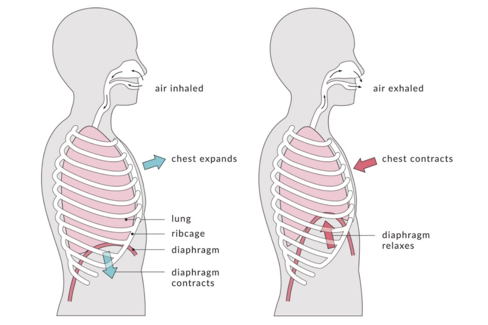
Palpation: feel for tenderness, lumps, and deformities. Chest excursion: thumbs at T9–T10, client takes a deep breath, thumbs should move apart evenly.
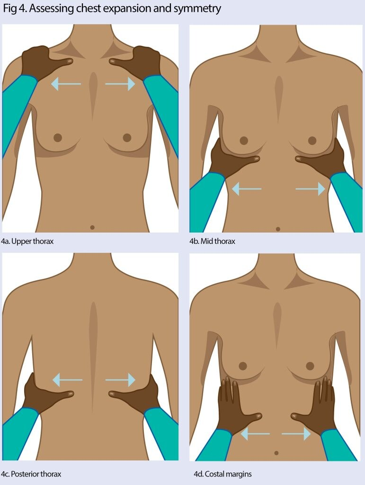
Tactile fremitus: palms on the chest while the client says "99." Vibration should be symmetric.
- Increased = pneumonia
- Decreased or absent = pneumothorax
Both are unexpected.
Percussion
| Sound | Means |
|---|---|
| Resonance | Expected: low-pitched, hollow, air-filled lung |
| Dullness | Fluid or solid: pneumonia, tumor, mass |
| Hyperresonance | Trapped air: emphysema or pneumothorax |
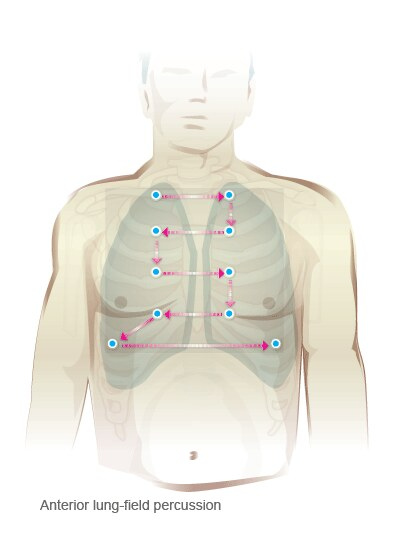
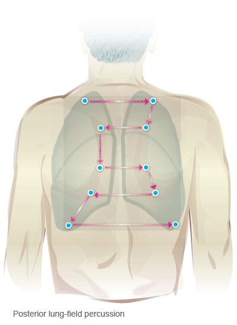
Auscultation
Diaphragm on bare skin, quiet room, no talking. The client breathes deeply through an open mouth each time you move. For the back, have them cross their arms. Listen to a full breath at each spot, and let them rest if they get lightheaded.
| Expected sound | Where | Sounds like |
|---|---|---|
| Bronchial | Over the trachea (front only) | Loud, high, hollow; expiration longer |
| Bronchovesicular | Over the main bronchi, front and back | Medium pitch, blowing; equal in and out |
| Vesicular | Most of the lungs, toward the bases | Soft, low, breezy; inspiration longer |
Bronchial sounds over the outer lung are abnormal.
| Adventitious | Sounds like | Cause |
|---|---|---|
| Crackles (rales) | Wet popping, usually end of inspiration; don't clear with coughing | Air through fluid or collapsed alveoli opening; fluid overload |
| Wheezes | Continuous, musical; high or low; mild = expiration only | Narrowed airways: asthma, mucus, inflammation |
| Rhonchi | Low-pitched snoring or rumbling; may clear with coughing | Mucus in large airways |
| Pleural friction rub | Grating or squeaking; painful; doesn't clear | Inflamed pleura rubbing |
| Stridor | High-pitched crowing, heard without a stethoscope | Upper airway blocked: emergency |
Diminished sounds: thick chest wall or adipose tissue, atelectasis, pleural effusion, pneumonia. Absent sounds: collapsed or removed lung. Atelectasis: no sounds at the bases from collapsed alveoli (shallow breathing, secretions, fluid, or air).
Crackles Can't Clear, Rhonchi Run off with a cough. Hear rumbling? Have them cough and listen again.
Lung aging: barrel chest, less expansion, weaker cough, slower cilia, higher infection risk, kyphosis.
Heart
Auscultation landmarks: know all five sites and what S1 and S2 are.
| Site | Location |
|---|---|
| Aortic | 2nd intercostal space (ICS), right sternal border |
| Pulmonic | 2nd ICS, left sternal border |
| Erb's point | 3rd ICS, left sternal border |
| Tricuspid | 4th ICS, left sternal border |
| Apical/mitral (PMI) | 5th ICS, left midclavicular line |
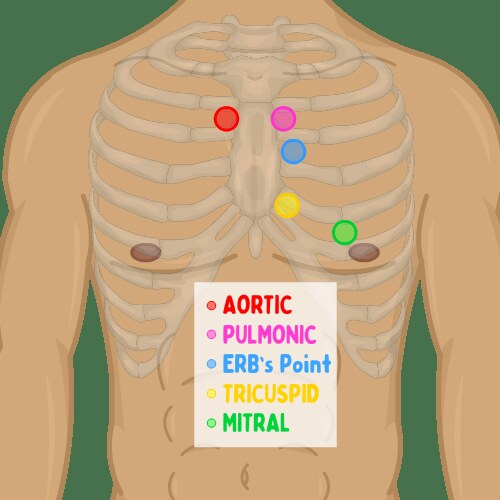
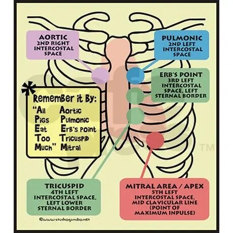
APETM, "All Pigs Eat Too Much": Aortic, Pulmonic, Erb's point, Tricuspid, Mitral, top to bottom.
Find the 2nd ICS from the angle of Louis (where the manubrium meets the sternum); the space is just below the 2nd rib. Listen with the diaphragm, then again with the bell, sitting forward, supine, and on the left side (best for extra sounds).
| Sound | When | What it is |
|---|---|---|
| S1 "lub" | Start of systole | Mitral and tricuspid close; loudest at the apex; matches the carotid pulse |
| S2 "dub" | Start of diastole | Aortic and pulmonic close; loudest at the base |
| S3 "Ken-TUCK-y" | Right after S2 | Ventricular gallop; rapid filling; CHF (can be normal in young adults); bell |
| S4 "TEN-nes-see" | Just before S1 | Atrial gallop; HTN, CAD, MI (can be normal in older or athletic adults); bell |
The slides place S4 "immediately after S1." Both ATI sources place it just before S1, and this guide follows ATI.
Murmurs
- Blowing or swishing from turbulent flow; use the bell
- Stenotic valve (won't open) or regurgitant valve (won't close)
- Systolic follow S1; diastolic follow S2
- Grade 1 (hard to hear) → 4 (loud with a thrill) → 6 (heard without touching the chest)
Other findings
- Thrill: palpable vibration, like a purring cat
- Bruit: blowing sound over a narrowed artery; bell
- Heave or lift: visible thrust at the left sternal border or PMI = heart failure
- Pericardial friction rub: high-pitched scratch through systole and diastole, loudest at the apex
- Dysrhythmia: irregular beats
Bruits you hear, thrills you feel.
PMI: just inside the left midclavicular line at the 4th–5th ICS, no bigger than a nickel. Larger or shifted left = left ventricular hypertrophy. Palpating the PMI for heaves and thrills is an advanced-provider skill.
Apical rate: count a full minute. Pulse deficit: two nurses count apical and radial at the same time for 60 sec; a difference of 2 or more is a deficit. Report it.
Neck vessels
- JVD: head of bed at 30–45°, head turned. Distention at 45° is unexpected and points to right-sided heart failure
- Jugular pulsation disappears with light pressure; carotid matches the radial pulse and doesn't
- JVP under 2.5 cm (1 in) above the sternal angle. Both sides high = right-sided HF; one side = obstruction
- Carotids: one side at a time. Pressing both can make the client pass out
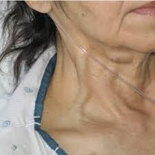
Cardiovascular aging: higher systolic BP, wider pulse pressure, stiffer vessels and valves, lower cardiac output, harder-to-feel PMI.
Peripheral vascular
Pulse sites: temporal, carotid, apical, brachial, radial, femoral, popliteal, dorsalis pedis, posterior tibial.
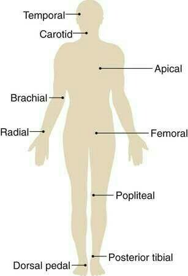
| Pulse | Where |
|---|---|
| Carotid | Beside the trachea, inside the sternocleidomastoid |
| Brachial | Antecubital fossa |
| Radial | Thumb side of the wrist |
| Femoral | Halfway between the symphysis pubis and the front hip bone |
| Popliteal | Deep behind the knee |
| Dorsalis pedis | Top of the foot, beside the big toe tendon |
| Posterior tibial | Behind and below the inner ankle bone |
Compare both sides at the same time (not carotids), starting at the most distal pulse. The dorsalis pedis is the most commonly checked leg pulse and may need a Doppler.
Grading: 0 absent, 1+ weak and thready, 2+ brisk (expected), 3+ full, 4+ bounding.
Capillary refill: press the nail bed until it blanches, then release. Color should return in under 3 seconds. Slower can be expected in older adults and clients with chronic illness.
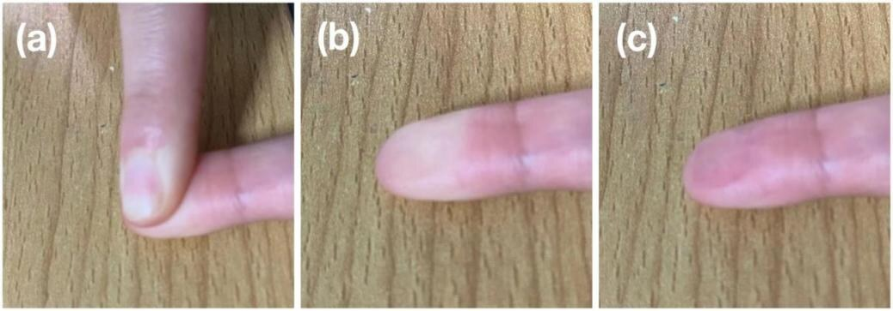
One section of the ATI skills module says under 2 seconds. This guide uses under 3 seconds, which matches the chapter and the slides.
Arterial insufficiency
- Shiny, translucent skin
- No hair on the toes and feet; hair loss below midcalf
Venous insufficiency
- Brown discoloration
- Leg edema
Know these on sight.
| Finding | Looks like |
|---|---|
| Spider angioma | Red center with red legs, up to 2 cm |
| Cherry angioma | Red, round, 1–3 cm, may be raised |
| Spider veins | Bluish, spidery or linear |
| Petechiae | Deep red-purple, flat, 1–3 mm |
| Purpura | Same, larger than 3 mm |
| Ecchymosis | Bruise: purple fading to green and yellow; flat |
| Hematoma | Raised bruise |
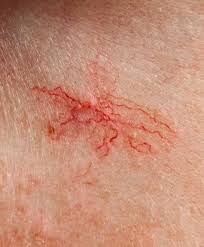
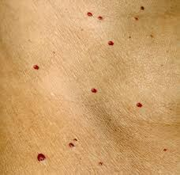
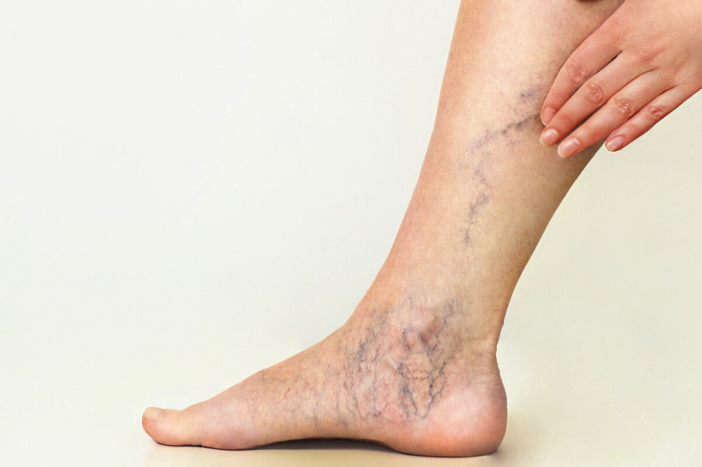
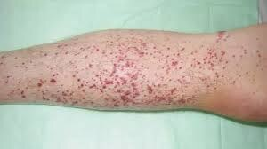
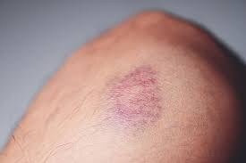
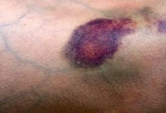
Abdomen
Order is different here: inspect, auscultate, percuss, then palpate. Touching first changes bowel sounds.
Have the client void, then lie supine with arms at the sides and knees slightly bent. Quadrants are divided through the umbilicus, from the xiphoid to the symphysis pubis.
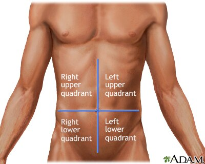
Inspect
- Skin: lesions, scars, silver striae (expected), dilated veins (liver disease)
- Jaundice, cyanosis, ascites
- Contour: flat, convex (round), concave (sunken), distended
- Midline pulsations above the umbilicus are fine in thin adults; a pulsating mass isn't
- Visible peristalsis: thin adults or obstruction
Distention
- Fat: rolls along the sides, skin not taut
- Fluid: flanks bulge and shift when the client turns
- Flatus: midline bulge, flanks unchanged
- Hernia: bulges through the wall when muscles tighten
- Measure girth at the umbilicus to track fluid
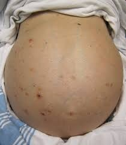
Auscultate
Bowel sounds: use the diaphragm, start in the RLQ, then RUQ → LUQ → LLQ.
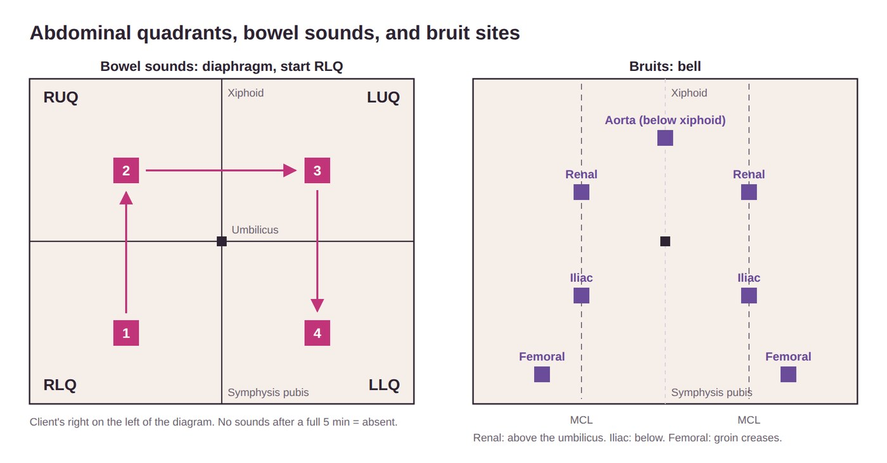
| Finding | Means |
|---|---|
| High-pitched clicks and gurgles, 5–35/min | Expected |
| Hyperactive (loud, frequent) | Diarrhea, anxiety, bowel inflammation, food reactions |
| Borborygmi (loud growling, heard without a stethoscope) | Hyperperistalsis: unexpected |
| Hypoactive (<5/min) | Meds, anesthesia, constipation, obstruction |
| Absent | None after a full 5 minutes: obstruction |
| Swishing (bruit) | Vessel or liver disorder: report |
Bowel sounds are often loudest in the RLQ near the ileocecal valve. If you hear them there, some facilities don't require the other quadrants. Unexpected sounds? Have a second nurse confirm.
The ATI chapter text says 5–34/min and calls borborygmi an expected variation. The ATI practice question and the slides say 5–35/min and unexpected, and this guide follows those.
Bruits (bell): abdominal aorta just below the xiphoid, renal arteries above the umbilicus at the midclavicular lines, iliac arteries below the umbilicus, femoral arteries in the groin. An aortic bruit can mean an aneurysm.
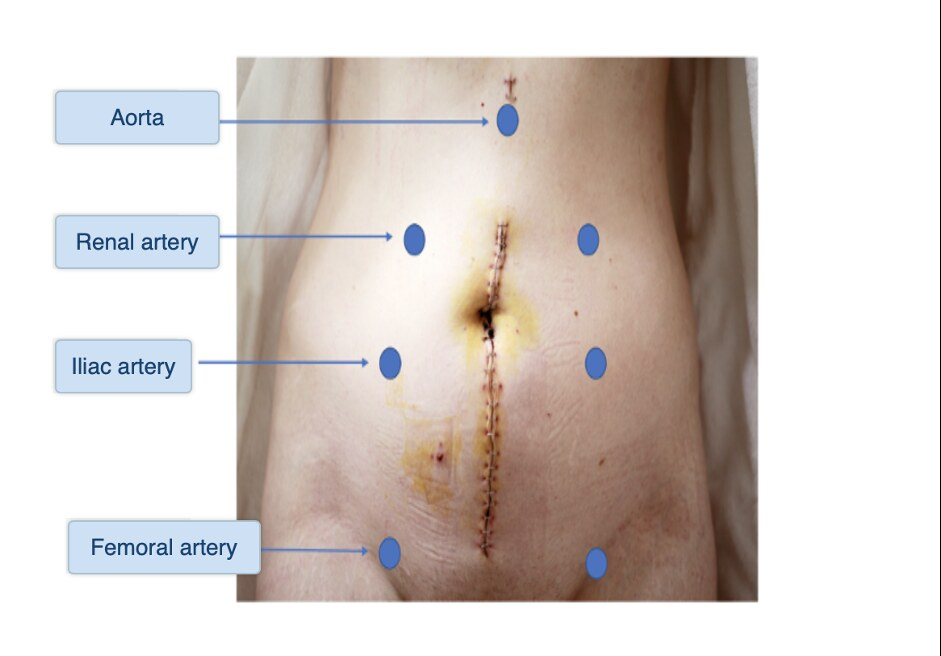
Percuss
| Sound | Where |
|---|---|
| Tympany | Most of the abdomen (expected); lower over the stomach bubble in the LUQ |
| Dullness | Liver, spleen, full bladder |
Liver span: 6–12 cm at the right midclavicular line; bigger = hepatomegaly. CVA tenderness: fist on your hand over each costovertebral angle; pain = kidney inflammation.
Palpate
- Light: finger pads of one hand, about 1–1.3 cm (0.4–0.5 in) deep
- Deep (2.5–7.5 cm): advanced providers only
- Tender areas last
- Expected: soft, nontender, no masses; bladder felt only if full
ATI says light palpation is 1 cm (0.4 in) deep; the slides say 0.5 in (1.3 cm). Both are listed.
Red flags
- Involuntary rigidity (stays hard when relaxed) = peritoneal inflammation, especially with absent bowel sounds
- Rebound tenderness (pain when pressure is released) = peritoneal irritation
- Found tenderness? Stop palpating and notify the provider
Voluntary guarding is just an anxious client tensing up. Having them exhale helps.
Deep palpate a mass, a tender organ, or an incision.
Abdominal aging: rounder belly, weaker muscles; peritonitis is harder to spot (less pain, guarding, and fever).
Musculoskeletal
Inspect and palpate, comparing sides: gait, alignment, symmetry, muscle size and tone, range of motion, involuntary movements, inflammation, deformities, height, posture, and spine. The assessment is tailored to the client with safety in mind.
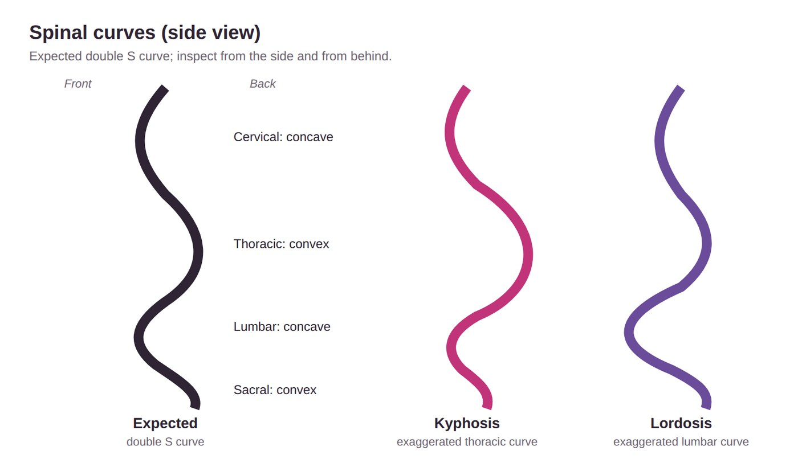
| Spine | What you see |
|---|---|
| Expected (double S) | Concave cervical, convex thoracic, concave lumbar, convex sacral |
| Kyphosis | Exaggerated thoracic curve; older adults with osteoporosis; limits lung expansion |
| Lordosis | Exaggerated lumbar curve; pregnancy |
| Scoliosis | Sideways curve; check with the client bending forward (uneven hips, shoulders, or skin folds) |
Range of motion
Know every ROM term.
| Movement | Meaning |
|---|---|
| Flexion | Decreases the joint angle |
| Extension | Increases the joint angle |
| Hyperextension | Beyond normal extension |
| Abduction | Away from midline |
| Adduction | Toward midline |
| Supination | Palm or front surface up |
| Pronation | Palm or front surface down |
| Dorsiflexion | Foot and toes up |
| Plantar flexion | Foot and toes down |
| Eversion | Turned away from midline |
| Inversion | Turned toward midline |
| Internal rotation | Rotated inward |
| External rotation | Rotated outward |
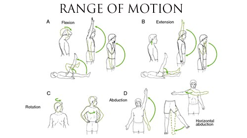
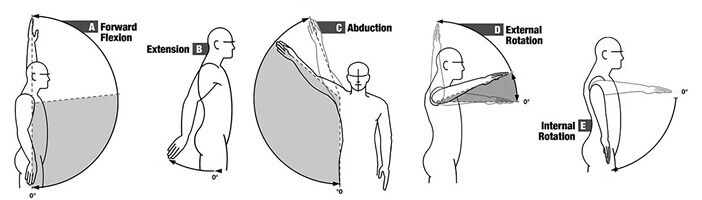
ADDuction ADDs the limb back to the body.
Passive ROM: you move the joint, and never past pain or resistance. Active ROM: the client copies your movements. Check joints for warmth, swelling, stiffness, crepitus (crunching), deformity, tenderness, and instability.
| Strength | Means |
|---|---|
| 0 | No contraction |
| 1 | Trace contraction |
| 2 | Moves with gravity eliminated |
| 3 | Moves against gravity |
| 4 | Moves against some resistance |
| 5 | Full strength (expected) |
Test against resistance at the shoulders, elbows, wrists, hips, knees, and ankles, plus grip. Expect equal strength (dominant side slightly stronger and up to 1 cm larger). Hypertrophy = enlarged from use; atrophy = shrunken from disuse, soft and boggy. Flaccid = low tone; spastic = high tone.
Balance & gait
| Test | How | Expected |
|---|---|---|
| Romberg | Feet together, arms at sides, eyes closed | Minimal sway for at least 5 sec. Sways more than a couple of inches? Stop and document |
| Heel-to-toe | Heel in front of toes in a straight line | Keeps balance |
| Get-up-and-go | Rise without using arms, walk 3 m (10 ft), turn, return, sit | Timed; assistive devices OK |
| Gait | Watch when the client doesn't know | Steady, smooth; heel strike to push-off; arms swing opposite |
Also have the client walk on tiptoes and on heels. Watch for small halting steps, favoring one side, a wide base, or foot drop.
Musculoskeletal aging: less muscle and bone, height loss, stiff joints, kyphosis, wider stance.
Quick check
Fremitus is increased over the right lower lobe. Suspect?
Pneumonia.
Low-pitched rumbling over the large airways. What next?
Have the client cough, then listen again. Rhonchi may clear.
Where is Erb's point?
3rd intercostal space, left sternal border.
Why auscultate the abdomen before palpating?
Palpation and percussion can change bowel sounds.
Moves the arm against gravity but not resistance. Strength grade?
3.
Safety
The national safety goals, how errors get reported, preventing falls, using restraints, seizure and fire response, and safety at home.
National Performance Goals
The Joint Commission (JC) reviews safety every year and accredits facilities that meet its goals. NPGs (14 goals) apply to hospitals; NPSGs apply to other settings, such as ambulatory care and assisted living.
Client identification
- At least two identifiers: name, DOB, MRN, phone number
- Ask open-ended ("What's your name and date of birth?"), then check the band or EMR
- Never use the room number: rooms change
- Never skip barcode scanning
- Same-name clients: follow the same-name alert policy, add identifiers
Critical results
- Outside the expected range and possibly life-threatening (Ex: sodium 120 mEq/L)
- Give them directly to the provider, in person or by phone
- Never by voicemail
- Document who reported and who received
Alarm safety: constant nuisance alarms cause alarm fatigue, so staff respond slower. Don't ignore or silence alarms, prioritize them, and report broken equipment right away. ICUs are the loudest.
Before surgery: two identifiers, mark the site, and a time-out (everyone pauses). The client states the procedure and points to the site; verify consent. The surgeon or another clinician marks the site when there's more than one possible side. No marking for bilateral organs (tonsils, ovaries); mouth, teeth, or perineum need a signed waiver.
Medication safety
- Label every medication in a procedure; discard anything unlabeled
- Anticoagulants (warfarin, heparin, enoxaparin): monitor weight, renal and liver labs, dose, and interactions
- Medication reconciliation: compare home meds with new orders at admission, transfer, discharge, and provider changes
Infection prevention
- Hand hygiene is the single most important step
- 4 HAIs: CLABSI, CAUTI, SSI, VAP
- MDROs: MRSA, VRE, C. diff
Other goals: pain plans use nonopioid and nonpharmacological options first; informed consent covers the treatment, benefits, risks, side effects, and alternatives, in a way the client understands; screen and report maltreatment; staff for 24-hr care; safe imaging, transplant, and waived (point-of-care) testing.
Suicide prevention: screen clients, and a positive screen always gets a follow-up (Is there a plan? For how long? Any self-injury?).
The slides say all admissions are screened. ATI specifies all clients 12 and older whose primary admitting diagnosis is behavioral health, using a validated tool.
Leave a client alone who has active suicidal thoughts or a plan. They need continuous observation and a room cleared of harmful items.
Equity: JC's goal is care free of discrimination. Assess social needs (transportation, literacy, housing, food) and provide interpreters. The Speak Up initiative encourages clients to report concerns.
Culture of safety & communication
To Err Is Human (1999) made a culture of safety a priority: open communication, confidential reporting, and reporting near misses too. Transforming Care at the Bedside aims for 70% of nurse time at the bedside, plus leadership training, rapid response teams, and standard communication tools.
Hourly rounding: check toileting, position, pain, side rails, bed height, and call light every hour. It reduces falls.
Rapid response team (RRT)
Brings critical care skills to the bedside. Call for:
- Sudden vital sign changes
- Low SpO2 despite oxygen
- Chest pain despite nitroglycerin
- Seizure
- Sudden mental status change
- Any staff concern
Not for: a single high blood glucose.
ATI lists the RRT as an ICU nurse, respiratory therapist, and critical care provider. The slides add lab and pharmacy.
ISBARR: Identity, Situation, Background, Assessment, Recommendation, Read back. Read back means repeating the order to the provider to confirm it.
| ISBARR | What to say |
|---|---|
| Identity | Who you are and where you're calling from |
| Situation | Client name, age, diagnosis, the concern |
| Background | History, medications, advance directives |
| Assessment | Your impression, findings, vital signs, labs |
| Recommendation | Treatment given and response; what you need |
| Read back | Repeat the order back |
Handoff report happens at the bedside, written or verbal.
Unexpected events & reporting
| Event | Definition | Example |
|---|---|---|
| Near miss | Error caught before it reached the client | Celebrex ordered as Celexa, caught at reconciliation |
| Client safety event | Unexpected event that could have caused harm | NPO client eats a tray; procedure delayed |
| Adverse event | Unexpected harm | Client falls and sprains a wrist |
| Sentinel event ("never event") | Death, permanent harm, or severe temporary harm | Wrong-site surgery |
Common sentinel events: falls with serious injury, wrong-site surgery, retained objects, suicide in the facility, infant abduction. An expected death from illness is not a sentinel event.
After an incident
Occurrence reports aren't punitive. They track trends and root causes. Report falls, unexpected drug or vaccine reactions, wrong medications, lost property, body fluid exposures, and actions against policy.
Workplace safety
- Bullying: repeated harassment or isolation; fix it with a respectful, communication-focused culture and strong leadership
- Violence (OSHA): any act or threat of violence or intimidation at work; highest in behavioral health, long-term care, and the ED
- Report to a supervisor or HR; zero tolerance
- OSHA retaliation complaints within 30 days
Warning signs in a coworker
- Unexplained absences, declining work
- Constant complaints, policy abuse
- Mood swings, substance use
- Outbursts at criticism, paranoia
Fatigue: under 4 hours of sleep in 24 makes a car crash 11.5 times more likely.
Falls
A fall is an unplanned descent to the floor, with or without injury. It's the main safety risk for older adults (1 in 4 fall each year), and Medicare and Medicaid don't pay for fall injuries.
Physical risks
- Stroke, amputation, recent surgery, MS
- Vision problems, weakness, unsteady gait, assistive devices
- Chronic pain, malnutrition
- Incontinence or frequent toileting
- Orthostatic hypotension
Cognitive & other risks
- Confusion, dementia, impulsiveness, depression, sleep disorders
- Clutter, poor lighting, slippery floors
- History of falls; age
- Meds: antidepressants, antihypertensives, anticonvulsants, sedatives
The priority for any client with a fall history is a fall-risk assessment first.
Do it at admission, regularly, with any change in condition, on transfer, and after a fall.
Morse Fall Scale factors: history of falling, secondary diagnosis, ambulatory aid, IV access, gait, mental status.
Universal fall precautions
- Nonskid footwear
- Bed low and locked; wheelchair brakes on
- No clutter; good lighting
- Call light and belongings in reach (client does a return demonstration)
- Orient to the room and call light
- Answer call lights quickly; hourly rounding
Higher-risk clients
- Room near the nurses' station
- Color-coded wristband or room sign
- Bed or chair alarms
- Video monitoring or a sitter
- Regular toileting, gait belts
- Orthostatic hypotension: sit a few seconds, stand a few seconds, then walk
Side rails: keep them up for sedated, unconscious, or compromised clients. For a client who tries to get up alone, all four rails up is a restraint and invites climbing over. Two upper rails prevent rolling out while still letting the client exit.
Hospital-acquired injuries: HAIs, burns or shocks, transfusion reactions, falls, unsafe insulin use, DVT, and pressure injuries. Clients with communication disabilities have 3 times more adverse events.
Restraints
Restraints protect the client or others. They are a last resort, for the shortest time possible, and never for staff convenience, punishment, or short staffing.
Try first
Indications: pulling at tubes, IVs, catheters, or drains; unsafe movement; aggression; danger to self or others, once alternatives fail.
| Type | What it is |
|---|---|
| Mechanical | Devices on the wrists or ankles. Least restrictive are soft restraints: hand mitt, then soft wrist or elbow. Most restrictive: four-point |
| Physical | Manually holding the client, short-term (like for an injection) |
| Chemical | Medications to control behavior (benzodiazepines, antipsychotics) |
| Barrier | Lapboard, bed enclosure, all 4 side rails |
| Seclusion | Alone in a locked room; mainly psych |
Many facilities don't use vest restraints because of strangulation risk.
Orders
- Written by the provider after a face-to-face assessment
- Must state the reason, type, location, duration, and behavior
- Adult: 4 hours, renewable up to 24 consecutive hours
- No PRN restraint orders
Restraint need is reevaluated every 24 hours, and the provider must physically see the client within that time.
Applying
- Pad bony prominences
- Two fingers fit under it
- Fastener on the outside
- Quick-release knot or buckle
- Tie to the movable bed frame, out of reach
Ongoing care
- Remove each restraint 15 min every 2 hr (or per policy)
- Check skin, circulation, ROM, pain, device placement
- Offer food, fluids, toileting; vital signs
- Discontinue as soon as safe
Two fingers, quick release, bed frame, never the rail.
Tie a restraint to the side rail. Raising or lowering the rail can injure the client.
Problems: impaired circulation → remove the restraint immediately, reassess, and notify the provider. Skin change → notify, treat, and replace a wet restraint. Don't reapply either way without an order. A death in restraints is a sentinel event.
Document: what happened before, alternatives tried, times on and off, type and location, behavior, care given, condition of the limb, response at removal, and medications.
Seizures
A seizure is a sudden surge of abnormal electrical activity in the brain. Focal (partial) affects one hemisphere; generalized affects both. Status epilepticus (prolonged seizure) is an emergency.
Before → during → after
Before (precautions)
- Suction and oxygen at the bedside
- Oral airway available
- Padded side rails
- Baseline vital signs and SpO2
- IV access (saline lock)
- Remove tight clothing and jewelry
- Ask about an aura (client warns you, removes dentures)
ATI's Client Safety chapter says a saline lock; ATI's injury-prevention lesson says to establish two IV sites.
During
- Stay with the client; call for help (call light)
- Side-lying; protect the head; suction as needed
- Move furniture away; loosen clothing
- Note the start time, duration, body parts, eyes, incontinence
- Benzodiazepine IV (or IM) as prescribed; check glucose
Restrain the client or put anything in their mouth (an oral airway only in status epilepticus). Never leave to get help.
After
Check mental status, vital signs, and SpO2. Check the gag reflex and that they can follow directions before food or fluids. Reorient, reassure, quiet room. Possible labs: toxicology, anticonvulsant level, EEG, imaging. Document the triggers, aura, movements, injuries, duration, and postictal state.
Fire, electrical, chemical & radiation
Fire safety: know how to respond and how to use an extinguisher.
RACE: Rescue, Alarm, Contain, Evacuate.
- Rescue clients in immediate danger first (ambulatory clients can walk)
- Alarm: pull it, then report the location
- Contain: close doors and windows; turn off oxygen; bag-valve-mask clients on life support
- Evacuate: extinguish small fires only if trained and safe
ATI lists RACE's "E" as Extinguish (put out small fires if safe and the right extinguisher is available).
PASS: Pull the pin, Aim at the base, Squeeze the handle, Sweep side to side.
Evacuation: lateral (same floor) is preferred over vertical (another floor). Move those closest to the fire first, close doors, cover clients with blankets, stay low, and don't run. Fire needs heat, oxygen, and fuel; take one away and it stops.
Electrical
- Check for frayed cords, three-prong plugs, intact outlets, no sparks
- GFCI outlets divert stray current
- Dry hands; pull by the plug; no extension cords
- Unsafe? Tag it, remove it, call clinical engineering
Chemical
- Exposure routes: inhalation, skin or eyes, ingestion, injection
- Safety data sheets (SDS) list hazards, first aid, cleanup
- PPE and ventilation
- Exposure: remove the chemical; eyewash or shower
Radiation: reduce time, increase distance, use shielding (lead apron). CT gives more radiation than an x-ray. Ask about pregnancy and last period first. Wear PPE for urine and blood from clients with radioactive implants.
| Type | Risk |
|---|---|
| Alpha | Least; doesn't pass through clothing |
| Beta | Middle; needs special clothing |
| Gamma | Most serious; passes through tissue; needs lead |
Mass casualty: radiation exposure causes nausea, vomiting, diarrhea, and sometimes hair loss and burns. Decontaminate by removing clothing and washing; potassium iodide keeps the thyroid from absorbing radioactive iodine. Biological or chemical: full PPE if the agent is unknown, cut off and double-bag clothing, decontamination shower. Many people with the same symptoms suggests a biological event.
Disasters: CMS requires a plan, training at orientation and yearly, and drills. Know your role and the chain of command.
Active shooter priority: run, hide, fight, in that order. Take threats seriously and report them up the chain of command.
Home & community safety
Home safety assessments use a risk tool, a history and physical, and a home hazard appraisal, often with PT and OT.
Adolescents
- Smoking, vaping, alcohol, drugs, unprotected sex
- Driver's ed, seat belts, no distracted or impaired driving
- Sports gear; firearm safety; check water depth before diving
- Watch for depression or behavior changes
- SPF 30+, no tanning beds; monitor social media
Adults & older adults
- Adults: car crashes are the top cause of death and injury; workplace injury, alcohol, suicide
- Older adults: falls (vision, hearing, nocturia); burns from reduced sensation; longer recovery
- Smoke and CO detectors; well-lit stairs
| Room | Changes |
|---|---|
| Bathroom | Grab bars, nonskid mat, shower chair, raised toilet, electric razor (especially on anticoagulants), GFCI outlets |
| Bedroom | Lower bed, motion or floor alarms |
| Kitchen | Items in reach, stove auto shut-off, pot handles turned in |
| Everywhere | Bright lighting, no throw rugs, cords along walls, no wheeled or swivel chairs, handrails, tape on stair edges, walls one color |
Water heater: no higher than 120°F (49°C).
Home fire safety: smoke alarms on every floor, tested monthly, batteries changed every 6 months. Two exits per room; practice escape twice a year. Stop, drop, and roll. Space heaters 3 ft from anything flammable. Cooking causes the most home fires.
Home oxygen
- No smoking in the home, even when it's off; signs on every door
- Flames, gas stoves, and appliances at least 10 ft away
- No oil-based lotions or aerosols; cotton bedding
- Fire: turn off the oxygen, get out, call 911
Other hazards
- Carbon monoxide: no smell or color; headache, nausea, weakness; detectors and yearly appliance checks
- Radon: second-leading cause of lung cancer
- Food poisoning (E. coli, Listeria, Salmonella): fridge at 40°F or below; avoid unpasteurized dairy and raw eggs
- Firearms unloaded and locked, ammo separate
First aid
Primary survey (≤60 sec)
Airway comes first because nothing else works without it. Do first aid after the primary survey.
| Situation | What to do |
|---|---|
| Bleeding | Direct pressure |
| Impaled object | Don't remove it; stabilize it |
| Fracture | Check pulses and movement, splint, recheck below the injury |
| Sprain | RICE: Rest, Ice, Compression, Elevation |
| Heat stroke (>40°C/104°F) | Hot, dry skin, hypotension, fast HR and RR, confusion. Cool fast: remove clothing, ice packs at major arteries, wet and fan; prevent shivering |
| Frostbite | White, waxy skin; rewarm in 37–39°C water; pain meds; tetanus |
| Burn | Remove the source, primary survey, cover, NPO, fluids, tetanus |
| Altitude sickness | Headache, nausea, dyspnea; oxygen and descend |
CPR (BLS) = CAB: compressions, airway, breathing. Check response and breathing (gasping counts as not breathing), call for help and an AED, check the pulse, start compressions.
Body mechanics & positioning
Assess mobility before moving a client. Many facilities have no-manual-lift and no-solo-lift policies, and lift equipment is the safest way to move clients.
Body mechanics
- Bend at the hips and knees, back straight
- Hold loads close to your body
- Wide base of support; face the direction you're moving
- Push: front foot forward. Pull: back foot back
- Slide, roll, or push instead of lifting
- Never twist your spine
- Two or more staff to reposition
- Sit with knees slightly above hips; footrest when standing; break every 15–20 min from repetitive tasks
Lift equipment
- Mobile (Hoyer) or ceiling lift: sling transfer; ceiling lifts strain your back less
- Sit-to-stand lift: client can partly bear weight
- Turn, draw, or glide sheet: turning and moving up in bed
- Two staff, correct sling size, brakes locked, never leave the client in the lift
Transfer priority: first decide whether the client can bear weight, help, and cooperate.
| Position | How | Used for |
|---|---|---|
| Semi-Fowler's | Head of bed 30–45° | Tube feedings, dysphagia (prevents aspiration), lung expansion |
| Fowler's | 45–60° | NG insertion, suctioning, lung expansion |
| High-Fowler's | 60–90° | Severe dyspnea; meals |
| Supine | Flat on back, pillow under head | Foot support prevents foot drop |
| Prone | On the abdomen, head turned | Drains secretions; prevents hip and knee contractures |
| Lateral (side-lying) | On the side, pillows under head and between legs | Takes pressure off sacrum and heels |
| Lateral semi-prone | Halfway between side and stomach | Drains secretions; relieves sacrum and hips |
| Orthopneic | Sitting, leaning on the overbed table | COPD: chest expansion |
| Trendelenburg | Head lower than feet | Postural drainage, venous return |
| Reverse Trendelenburg | Feet lower than head | Gastric emptying, reflux |
| Modified Trendelenburg | Flat, legs raised | Hypovolemia |
One ATI practice question gives semi-Fowler's as 15–45°. This guide uses 30–45°, as the ATI chapter does.
Quick check
What's the first step of RACE?
Rescue the clients nearest the fire.
A client's Morse score is 50. Risk level?
High (45 or higher).
Where do you tie a wrist restraint?
The movable part of the bed frame, with a quick-release knot. Never the side rail.
A client is seizing. Insert a tongue blade?
No. Turn them on their side, protect the head, and time it.
Tube feeding and dysphagia: which position?
Semi-Fowler's, head of bed 30–45°.